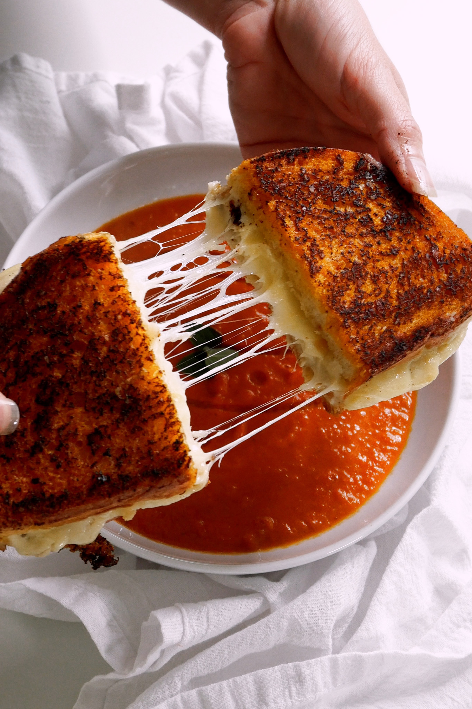

Home
Grilled Cheese

How to Make a Grilled Cheese Sandwich
A simple recipe consisting of a grilled cheese sandwich, served with tomato soup. This is the best comfort food to make you feel warm inside on a chilly day, or bring a smile to your face when you're feeling down.
Ingredients
- Good bread - sourdough preferred.
- Mayonnaise - to crisp the outside of the bread.
- Dijon mustard - adds delicious, subtle flavor.
- Butter - for the pan.
- Cheese - the most important ingredient! Multiple cheeses recommended for best flavor.
Steps
- Spread mayo on the bread. Instead of butter, spread mayo on the side of one slice of bread with a thin layer of dijon mustard.
- Add cheese. Grate your cheese and place a small mound over the plain slice of bread. Place the other slice on top, mayo side out.
- Cover the pan. Coat the bottom of the pan with butter, then add the sandwich and cover the skillet. Cook for 2-3 minutes, or until the bread is golden. Flip and repeat.
- When the bread is golden brown on both sides and the cheese is melted, remove from the pan. Slice and serve!